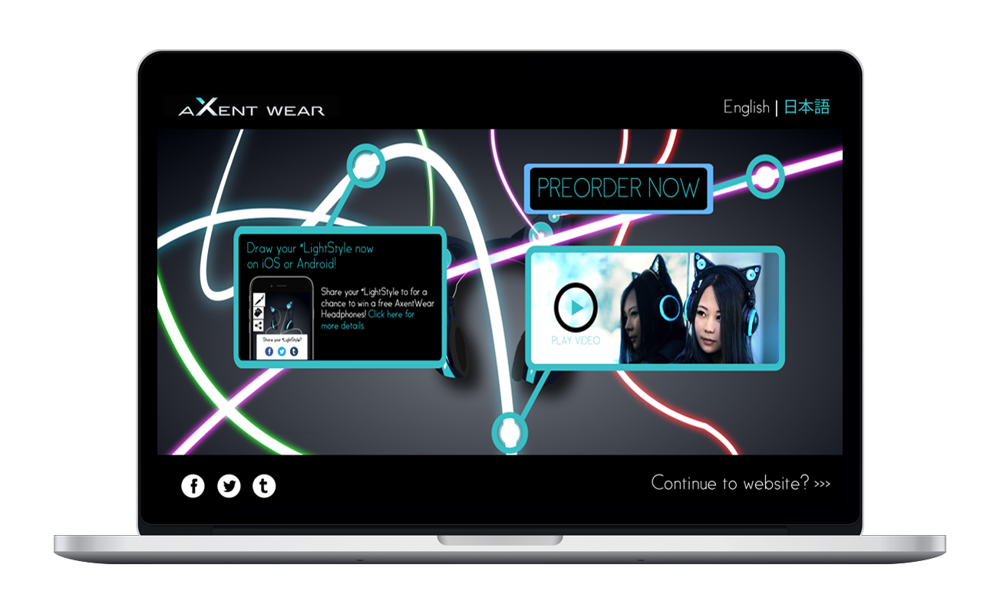
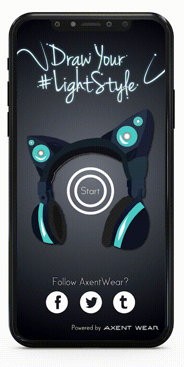
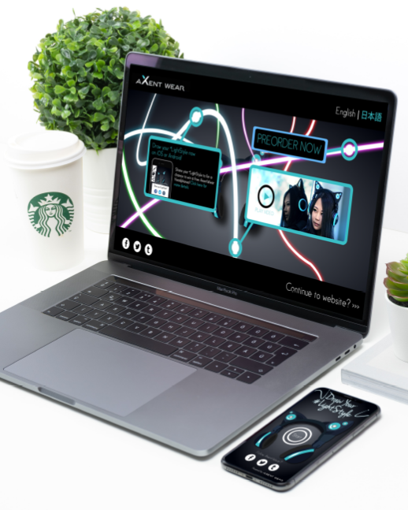

Axentwear #LightYourStyle Ad Campaign


Advertising
Playing on the stylish theme of AxentWear's headphones, we created the #LightYourStyle Ad Campaign to promote people's individuality with their fashion sense.
AxentWear's DrawYourLight app allows users to draw a unique fashion look of their own outfit while wearing the AxentWear headphones, sharing these outfit ideas on social media.
Utilizing its unique aspect of individuality and style, this ad uses multi-colored light drawings of different stroke patterns to display each person's “Light Style” in listening to their music through the AxentWear Headphones.
For the most exposure towards the target audience, it will be placed within the subway station of Don Mills as many students frequent there in part of their venture to the connected Mall.
